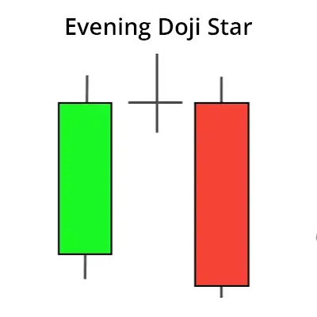
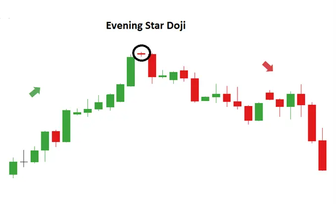
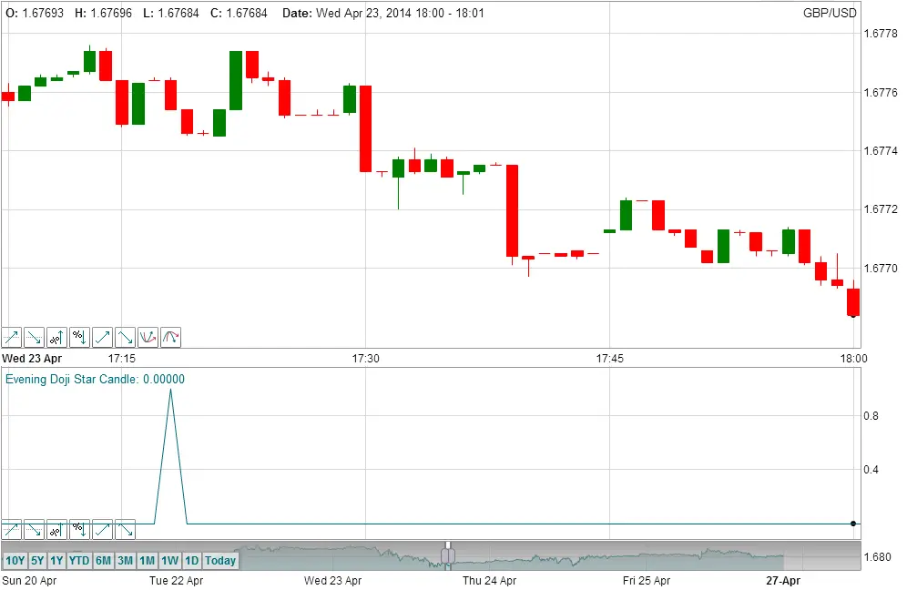

An Evening Doji Star consists of a long bullish candle, followed by a Doji that has gapped above it, then a third bearish candle that closes well within the body of the first candle and in doing so confirming the reversal. It is considered a strong bearish price reversal candlestick pattern.

| Evening Doji Star Indicator |
The Evening Doji Star indicator can be displayed on the TimeToTrade charts. It can be used to identify Evening Doji Star chart patterns, where by the indicator will rise above 0 to 1 when the Evening Doji Star chart pattern has been identified:
